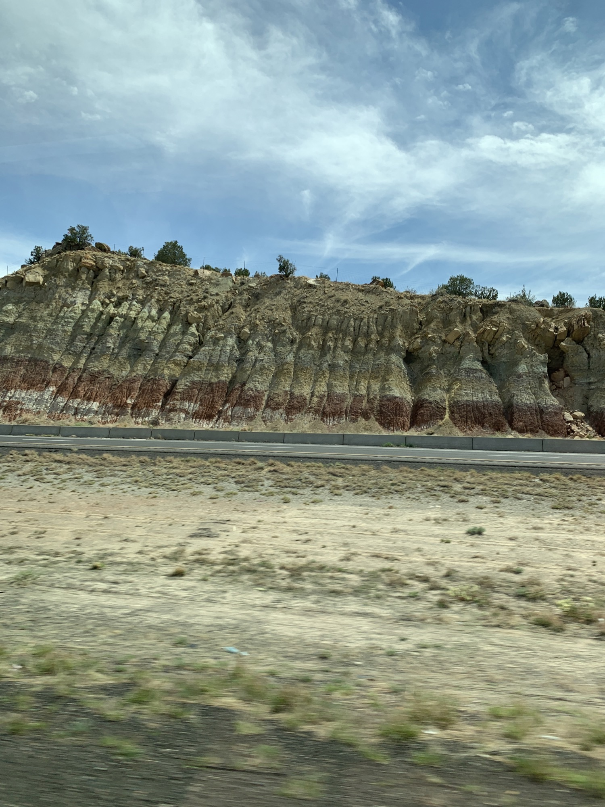

  <div> <div> <div>Motorcade pulled out of Albuquerque hotel at 2:22pm MST. </div> <div><br> </div> <div>It’s 166 miles to our next stop. Drive time to Window Rock, AZ, the tribal capital of Navajo Nation is 2 hours and 45 mins. </div> <div><br> </div> <div>The landscape along I-40 is sandy hills covered in tumbleweeds and sage colored brush, which gives way to straw-colored flatland, then red and purple mesas and hills covered in juniper bushes with mountains in the background. Signs to exit and drive on Historic Route 66 dot the interstate outside Albuquerque. We passed an RV park and RV sales shop called Camping World, as well as a Route 66 Casino Hotel with a big sign that said, “Mask up” on one side and “Casino Open” on the other. Very few trees are taller than four feet. Also passed signs advertising fry bread on Pueblos. A small herd of cattle. A freight train. Traffic was backed up on the other side of the interstate for a few miles, maybe rubbernecking. Sky is light blue with wispy cirrus clouds. </div> <div><br> </div> <div>The interstate passes through land on the Laguna and Acoma Pueblos. It is so beautiful. (Attached a few photos for reference.) </div> <div><br> </div> <div>The welcome ceremony will be at the Navajo Nation Museum.</div> <div><br> </div> <div><b><u>MORE BACKGROUND FROM FIRST LADY’S OFFICE</u></b></div> <div><br> </div> <div> <p> GREET</p> <p> • President Jonathan Nez</p> <p> • First Lady Phefelia Nez</p> <p> • Vice President Myron Lizer</p> <p> • Second Lady Dottie Lizer</p> <p> • Speaker Seth Damon</p> <p> SPEAKING PROGRAM </p> <p> • Kee Allen Begay, Council Delegate</p> <p> • President Jonathan Nez</p> <p> • Vice President Myron Lizer</p> <p> • Speaker Seth Damon</p> <p> • Chief Justice JoAnn Jayne</p> <p> • Navajo Nation Youth Advisory Council (performance)</p> <p> • Dr. Perphelia Fowler, Navajo Division of Human Resources Director</p> <p> BIOS </p> <p> President Jonathan Nez</p> <p> Jonathan Nez is the 9th and current president of the Navajo Nation. He was elected President of the Navajo Nation on November 6, 2018. Before his election, Nez served as Vice President from 2015 until his inauguration in early January 2019. Before being elected Vice President of the Navajo Nation, Nez served as vice president of the Shonto chapter, delegate to the Navajo Nation Council representing the Oljato, Ts'ah Bii' Kin, Navajo Mountain, and Shonto chapters. He is an alumni of Northland Pioneer College and Northern Arizona University (NAU). </p> <p> The First Lady and President Nez met in May 2019 to celebrate the opening of a cancer care center in Tuba City – the first cancer center in Navajo Nation.</p> <p> Navajo Nation First Lady Phefelia Nez</p> <p> First Lady Nez is of the Water Edge clan, born for the Many Goats clan. She was raised on Hopi Partition Lands in Big Mountain, Arizona. She is married to Jonathan Nez and mother of two children, Christopher and Alexander Nez. She completed her undergraduate studies in Political Science and Criminal Justice from Northern Arizona University. As First Lady, her platform focuses on restoring and strengthening homes and families.</p> <p> Vice President Myron Lizer</p> <p> Myron Lizer is the 10th and current Vice President of the Navajo Nation. Before taking office, Vice President Lizer served on numerous business, community, and private school boards of directors advocating for tribal issues and concerns. He received his BBA from Fort Lewis College. </p> <p> Navajo Nation Second Lady Dottie Lizer</p> <p> Navajo Nation Second Lady Dottie Lizer is of the Towering House Clan, born for Coyote Pass clan. She is married to Myron Lizer, and they have three children. As a family, they have operated family businesses for over 50 years.</p> <p> As the Second Lady, she aims to focus and advocate on behalf of the Diné women, children, elders, and the vulnerable population.</p> <p> Seth Damon, Speaker of the Council</p> <p> Hon. Seth Damon is the Speaker of the 24th Navajo Nation Council. In January 2021, Speaker Damon was elected to his second term as Speaker by the members of the Navajo Nation Council. During the 23rd Council, Speaker Damon served as the Chair of the Budget and Finance Committee and Vice Chair of the Eastern Navajo Land Commission. He earned a Bachelor’s degree in Political Science and American Indian Studies from Fort Lewis College.</p> <p> Kee Allen Begay, Jr., Council Delegate</p> <p> Kee Allen Begay, Jr. represents the Tachee/Blue Gap, Many Farms, Nazlini, Tselani/Cottonwood, and Low Mountain areas as Council Delegate on the Navajo Nation Council. He serves on the Resources and Development Committee of the Council.</p> <p> Chief Justice JoAnn Jayne</p> <p> Chief Justice JoAnn Jayne was appointed in January 2018. Prior to serving as Chief Justice, Jayne served as a state representative for seven years (2001-2008) in the Montana State Legislature. Chief Justice Jayne earned her J.D. from the University of Montana School of Law, her M.S. in Watershed Management and Hydrology from the University of Arizona, and her B.S. in Agricultural Industry from Arizona State University.</p> <p> Dr. Perphelia Fowler, Navajo Division of Human Resources Director</p> <p> Dr. Perphelia Fowler currently serves as the Executive Director of Navajo Nation Division of Human Resources. Dr. Fowler previously served as the Human Resources Director at Navajo Technical University in Crownpoint, NM. She earned her doctorate in Educational Leadership for Change from Felding Graduate University, in Santa Barbara, C.A., Master’s Degree in Human Resources-Business Administration, and Bachelor’s Degree in Human Resources-Business Administration. </p> <div> <br> </div> </div> <div><br> </div> <div><br> </div> <div> <div>Sent from my iPhone</div> <div>Jada Yuan</div> <div>Political Features Writer, <i>The Washington Post</i></div> <div>▊▊▊▊▊▊▊▊▊▊</div> <div>C: ▊▊▊▊▊▊▊▊▊▊</div> <div>Twitter: @jadabird</div> <div>IG: @alphajada</div> </div> </div> </div> 